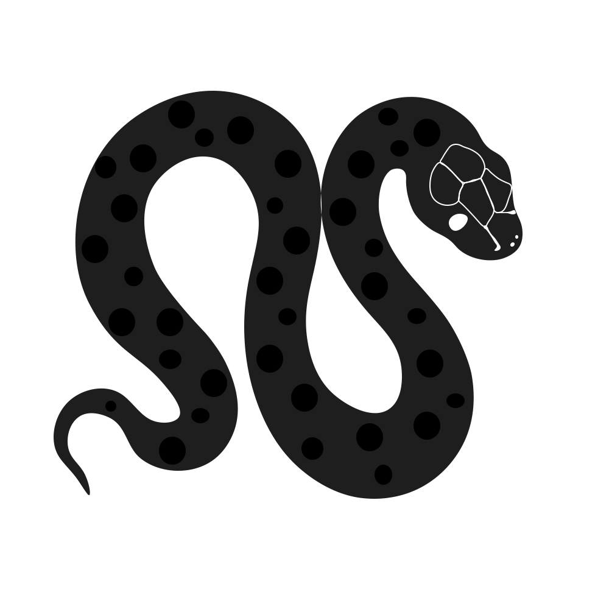
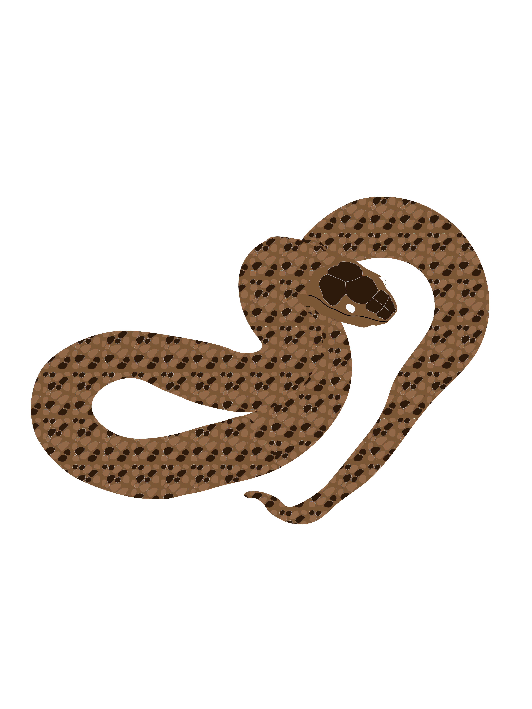
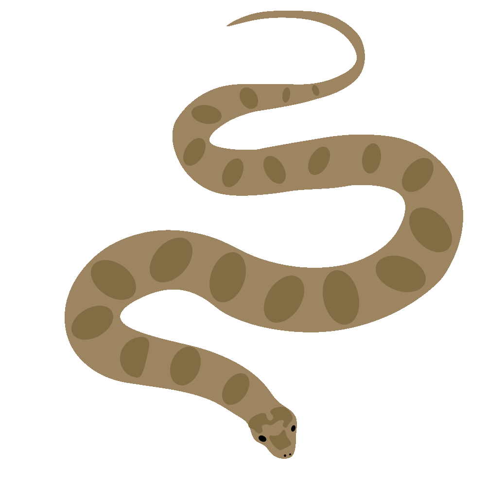

Проєкт — Змії України
Цей сайт присвячений зміям, які мешкають на території України. Тут ви знайдете інформацію про їхні види, середовище існування, особливості та поради щодо поведінки при зустрічі зі змією.

Гадюка нікольського
Отруйна гадюка, має локальне поширення — звертайте увагу на попереджувальні знаки.


Полоз лісовий

Водяний вуж
Швидкі поради при зустрічі зі змією
- Не панікуй: повільно відійди на безпечну відстань.
- Не намагайся ловити або провокувати — особливо отруйну.
- Якщо отримано укус — терміново звернись до медиків; пам'ятай основи першої допомоги.
Ці поради загальні — для конкретних сценаріїв дивись місцеві інструкції та джерела.
Завантажити вихідні файли
Тут ви можете завантажити вихідні файли проекту, включаючи файли фотошопа та інші ресурси.
Завантажити файлиГалерея
Усі фото проекту тепер зібрані на окремій сторінці. Переглядай повну добірку або завантажуй архів із ресурсами.
Відкрити галерею